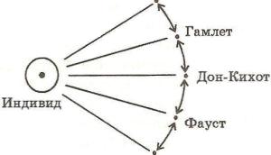
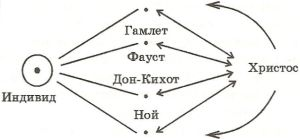
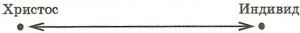

Гамлет-трагедия личности Нового времени
Предлагаемые ниже тексты – планы и заготовки, по материалам которых В.С. Библером было сделано в 1972 году два доклада. К сожалению, аудиозаписи докладов не сохранились. Общее название – «Гамлет-трагедия личности Нового времени» – дано самим автором. «Гамлет-трагедия» – неологизм В.С. Библера, который он употребляет почти как термин. Здесь имеется в виду не трагедия Шекспира «Гамлет», но характерная для Нового времени нравственная перипетия, проблема, вопросительность, некая регулятивная идея личности, сосредоточенная, в частности, в образе персонажа шекспировской трагедии. Другими ключевыми образами, на свой лад сосредоточивающими эту идею, были для Библера Фауст и Дон-Кихот. (В одном из вариантов текста автор пишет это название в одно слово, Гамлетрагедия, употребляя также слова Фаустрагедия, Дон-Кихотрагедия.) В Античности, Средневековье, в XX веке эта идея представлена по-другому, но всегда, по мысли В.С.Библера, не как тип, а именно как перипетия, как образ некоторой проблемы (см. об этом в «Заметках впрок», в кн. «От наукоучения – к логике культуры», «Нравственность. Культура. Современность» и др. работах).
Эти материалы состоят из нескольких частей:
-
Гамлет-трагедия личности Нового времени (первоначальный план).
-
Гамлет-трагедия личности Нового времени (более подробный план)
-
Приложение I (наброски к одному из пунктов плана).
-
Приложение II ( развернутый конспект характеристики «Гамлет-трагедии»).
-
Приложение III . Внутренняя форма трагедии «Гамлет» – внутренняя форма гамлет-трагедии личности.
-
Текст, не озаглавленный автором, содержащий более подробное изложение проблемы, который в первых фрагментах назван «старым текстом».
-
Приложение IV . Трагедия "Гамлет" в ключе монолога "Быть или не быть..."
Кроме того, сюда входят два относящихся к «Гамлету» фрагмента из «Заметок впрок», которые мы здесь не воспроизводим – см. с. 000
Текст был подвергнут минимальной правке. В частности, устранены разночтения в написании имен персонажей (Лаерт— Лаэрт), исправлены описки, расшифрованы сокращения. Вставки, сделанные составителем, даются в квадратных скобках. Слова, не поддающиеся расшифровке, отмечены как <нрзб>. Рукописные авторские пометки на полях мы воспроизводим в виде постраничных примечаний. Цифры на полях и иногда в тексте означают отсылки к соответствующим страницам книги: В. Шекспир. Гамлет, принц Датский. Перевод Б. Пастернака. М. – Л., 1951. По этой книге В.С.Библер работал с текстом, отдавая пастернаковскому переводу (в этой редакции) предпочтение перед другими известными ему переводами. В комментариях цитаты из «Гамлета», как правило, приводятся также по этой книге; другие случаи оговариваются специально.
___
Гамлет-трагедия личности Нового времени.
-
Вступление. «Наследственность» культуры и «круг кругов» образов личности.
Культурно-исторические трагедии формирования личности.
-
Исходные определения Гамлет-трагедии.
-
«Трагедия Шекспира Гамлет» как образ культуры.
а – б – в – г …
4. Трагедия Гамлет-бытия в мире в зерне монолога «Быть или не быть…».
-
Силовое поле этого монолога.
-
Опорные образы.
-
К сопряжению «Гамлет-трагедии» и «Фауст-трагедии» личности Нового времени.
___
Гамлет-трагедия личности Нового времени.
(План)
1. Вводные размышления о «кругах» формирования личности, о культуре, мистериях формирования личности в Средневековье и в Новое время. Иисус Христос – Гамлет, Фауст, Дон-Кихот… Радикальное отличие от исследования «типов», «характеров» и т.д. Ответ не на вопрос: каков характер Гамлета, в чем его разгадка, но ответ (точнее, – только вопрос) «на вопрос»: как формируется личность – из индивида в Новое время (один из ответов, один из вопросов).Не прошел Гамлетовский (и…) искус, – не стал личностью. Прошел эту ситуацию (а ее проходит каждый) неосознанно, не-гамлетовски , – не стал личностью… . Бытие в образе (Гамлета…) и в себе – н [ еобходимо ] для оп [ ределения] культурного человека. (Здесь – Пр[иложени]е: старый текст см.).1
2. Сводные определения Гамлет-трагедии личности Нового времени (в контексте текста «Гамлета»).
См. отдельно: п.2 (приложение1) и старый текст 2 (и приложение 2).
3. Внутренняя форма трагедии и возможности переосмысливания, перевоплощения, трансформации основной личностной трагедии. Технология «Гамлета» (со зрителем – соавтором внутри, по замыслу Шекспира, – творящего пьесу). Четыре заманки (языковые блоки; театр в театре; маргинальные трагедии – драмы; призраки – характеры); и пятая – полицентричность – к п.4. Но до этого: Брехтовское различение эпического и драматического театра и взаиморефлексия этих театров в «Гамлете», – не только как технологическая, но и как характерологическая суть дела. И –
4. Гамлет – трагедия личности в точке (ключе) монолога «Быть или не быть…» В его провалах, зияниях, сдвигах смысла, сумасшествиях… . Сопряжение с монологом «на [ четверть ] – мысль, на три прочих – трусость».a Как изменяется весь смысл Гамлета от того, какой монолог осмыслен (существует) как центр.
___
Приложение 1.
К пункту 2 («Сводные определения Гамлет-трагедии…»)
Вразброс:
1. Предельностьначала. 2. Углубление этой идеи до абсолюта – никто иной; коллизия знания. 3. Свобода до (вне…) действия – абсолютная обреченность – в действии. Два бессилия. Воление и долженствование. Мысль и чувство (ср.Паскаль). 4. Антипод Средневековья. 5.Предельность через искус самоубийства. 5. Основные противники (предметы преодоления) для достижения абсолютного начала: а. Призрак (я – меч в его руках. Ср. Флейта…рожок – сквозной образ); б. Рождение; в. Роли (принц, сын…). г. Непосредственные реакции; и – сквозное – д. Сама включенность в действие в открытом – в бесконечность – времени – в бесконечность следствий…(« Consciensе » - раздумье, сознание, совесть, следование по «следствиям»…) Но тогда – замыкание на себя, а это – см. выше – опять же бездейственность. 6.Параллель с Паскалем, Пико… (человек Ренессанса в неренессансной ситуации. Игра с образом Пико. Вспомнить Галилея и его «монстры». 7. Прервалась дней связующая нить, Я… должен связать время. Но если время оборвано, то я уже не должен, а потом – «коренной порок «я» – снова – Паскаль. 8. Культура Нового времени в ее социальных (всеобщий – совместный труд) определениях и в ее положенности самим мысленным доведением (точками трансмутации) прошлой культуры. Нота бене – эта коллизия. 9. На что отвечает Гамлет: на убийство или на коварство (всеобщее качество), на него ответить действием невозможно. Отец и мать. 10. Холод остановки («Я – Гамлет, холодеет кровь… – Блок) и основная идея Гамлет-трагедии. Замороженность всех чувств – призыв к размораживанью…. Ср.Паскаль – неподвижная точка. 11. Рок и … судьба неудачника. Личность в невключении, – т.е. в маргинальности, в стоянии (уже н е в центре) на обочине…. 12. Энигма в Средневековье и в контексте «Гамлета». Ср. Аверинцев. 13. И – на выходе – все едино суть, будь, что будет, на волю случая. Умеренность (середина – не по Пико делла Мирандоле…. Ср. Паскаль…). 14. Гамлет. Трагедия личности и … технология.
___
Приложение 2.
Развернуто: П «Гамлет-трагедия личности Нового времени».2
1. Проследить по тексту –
а. Столкновение с Клавдием. Заведенность от века, автоматизм связи времен (так всегда положено, – так долженствует… вплоть до…) и – впервые, абсолютно индивидуально (для меня – впервые, а до «всегда» мне…), неповторимо.b До этого ничего не было.3
б. Треугольник «Полоний – Лаэрт – Офелия…» и Гамлет. Все знают – как поступать и поучают других. Быть человеком (а не игрушкой судьбы = быть «верным самому себе» (Полоний – обращается к Лаэрту) = быть верным своей повторяемости, роли, – Сыну, Придворному, Рождению…. Не выбирать (Лаэрт о Гамлете: он не выбирает, поскольку: принц). И Гамлет, – быть верным себе – вначале, в неоправданности прошлым, именно (попробуй найти, очисти от «повторений») только себе. Полоний, Лаэрт и Офелия – наполненность иным, чужим. Трагедия это – в Офелии . 4c
в. Встреча с призраком.
Чтоужасает Гамлета…
Чтовзывает к мести, и чтоделает ее невозможной. От чего холодеет кровь!? (Блок, ср. «хохот» Герцена5d .) Культуро-логическая и технологическая роль этой замороженности (мертвая точка) чувств. Мы– в веках – эти эмоции размораживаем. Паскаль – о неподвижной точкеe . Замороженность, а не нерешительность. Потрясен всеобщностью коварства. Убийство… (отмщение) и коварство (отмщение невозможно, запрещено –мать, а не Клавдий), в нем растворяется индивидуальное. Ср. Паскаль – о расплывании точки цели для человека. Обращенность в прошлое (где исток?) Действие, обращенное в прошлое – уже мысль…
г. Клятва Гамлета. Быть орудием, мечом, стереть все индивидуальное… но см. выше – основной конфликт и сквозной образ, отвращающий Гамлета – «флейта», «рожок в руках, устах судьбы», – обязанность не самому себе. И – слово отца. Но – записывает (для читателя – не зрителя) Гамлет на таблицы – иное.– Все то же коварство. И – недоверие к миру, прежде всего – к Офелии.6f
д. Но повиноваться призраку, или – подчиняться ему – подчиняться самому себе, своей вынесенной вовне воле. Действие – вместе со своей основной трагедией – замыкается «на себя», на выключенное из действия Я. Ср.Гегель о сомнениях Гамлета в роли и в велении призрака, как начале саморефлексии. «Но может быть – дьявол… Может быть – мое желание…».g
е. Разрастание этих идей: чторазыгрывает Гамлет в «мышеловке». – Не столько убийство, сколько – коварство, эту «мертвую точку» Гамлетовского действия. И – абсолютное начало . См. сонет 59.h И – смысл гамлетовского «бездействия» – Клавдий – Лаэрту (как воление истощается…) и самому себе – во время молитвы…
ж. Кто современнее – Гамлет или Клавдий. Да, Для Гамлета – современное время развращено, да, – идеал – прошлое, но все эти прошлые призраки – честь и т.д. как индивидуальные, через неповторимость проведенные свойства личности – это уже Новое время.
з. Честь – как опаснейший призрак … 7i
и. «Порвалась дней связующая нить, как мне века – собой соединить…». Нет сплошного движения времени – к абсолютной причине. Как «связист» – соединить разорванные провода собой. Я – относительное и промежуточное – начало. И – NB – абсолютная покинутость между времен. 8j
к. Искус самоубийства. Абсолютное начало. Но – будь, что будет. Усталость…9
л. Для познания – вынесение во-вне. Зритель. – И Горацио.
м. Отступление к Брехту. Противопоставление двух театров – эпического и драматического .
Брехт:
Драматическая форма театра Эпическая форма театра
Действие Повествование
Вовлекает зрителя в действие Делает зрителя наблюдателем, но
и растрачивает его активность. пробуждает активность.
Позволяет проявлять чувства. Заставляет принимать решения.
Переживание. Мировоззрение.
Зритель сопереживает. Зритель изучает.
Внушение. Аргументация.
Восприятия консервируются. Переходят в познание.
Зритель находится в центре Зритель лицом к лицу с собы-
событий, сопереживает их. тиями, анализирует их.
Человек предпол. известным Человек является предметом
исследования.
Неизменный человек. Изменяющий и изменяющийся
человек.
Заинтересованность исходом Заинтересованность ходом дейст-
действия. вия (ср. Гамлет – актер).
Предыдущая сцена обусловли- Каждая сцена независима.
вает последующую.
Развитие. Монтаж.
Эволюционная неизбежность. Скачки.
Человек как неизменность. Человек как процесс.
Чувство. Разум.k
Но «Гамлет» и сам Гамлет их – этих двух театров – взаиморефлексия. Это – суть театра Шекспира и суть трагедии (отстранение и его невозможность, губительность) Гамлета. Гамлет-трагедии человеческой личности Нового времени.
2. Углубление в суть :
а. Основная трагедийная коллизия: два бессилия. Бесконечность (и бесконечная неопределенность) развязанных – данным поступком (он – начало, я за него ответственен, – я – не Бог, не герой, не судьба…) действий ,последствий , – Розенкранц – «спущенная махина» (137)l , и – если удастся удержаться от спуска крючка, – бессилие бездействия, свобода – без последствий – проигрывания всех вариантов – в уме, в себе, в душе, но все же это бессилие, это – устранение, это – зрительство, трусость. «Так трусами нас делает сознанье (раздумье, совесть, цепь последствий…)m . И . . . Здесь – Нота Бене – уже не автоматизм прошлого (стереотипы, призраки… заведенность), но – власть мной развязанного времени. Будущего, начинающегося от… Действия на…. Снова – о двух театрах.10
б. Этой идее плоть дает –
= действительная абсолютность начала (ничем не-освященность). Искус самоубийства. ( NB ) и –
= сдвиг через знание, которое (движение в котором) смещает цель (поиск – «было ли убийство?»), растворяет особенное во всеобщем и делает конкретное действие бессмысленным (ср. старый текст…).11
в. Параллель с Паскалем…12 Пико… Точка в середине и – человек Ренессанса в неренессансной ситуации. О ситуации выбора и точке Пико, в выборе не нуждающейся. Аквинат.n Трагедия сжатия в точку действияна.... И трагедия полноты бездействующего Я.
Тождество и «дополнительность» «совести» и «разумения». Ср. английский текст . 13opqrstuv
Особая сложность бесконечности в малом, в начале, в бесконечности, в содержащемся в особом, в индивиде, во мне, чтобы понять индивида как личность, и – действовать как личность (будет ли это тогда – личность?..) Ср. практический и теоретический разум Канта.
г. Рок и … судьба неудачника, судьба «аутсайдера». Неучастник – только он, –не действуя «в дугу», – обладает своей (несчастной, не ставшей частью… ср. «счастье») судьбой, не судьбой… Из центра – на обочину. Ср. Гете – долженствование и воление, игра в вист и в ломбер…(текст Гете ) 14w И – снова –
д. Два театра (Брехт)… (См. выше…)
е. Нота бене: Энигма в Средние века и в Новое время...Загадки15 – символ (есть высший смысл – отгадки, данный для Неба, для Священного…), значительно само несовпадение смысла и знака..(ср. Аверинцев) 16x и – энигма в Новое время: загадка, разгадки не имеющая. Никому не данная разгадка (ср. наука…). Проблема и текста, и смысла загадки человеческой личности . Она – для Нового времени – всегда лишь загадана. Ее – нет. Есть лишь коллизия превращения индивида в личность. Нет личности (а может быть, сама эта невозможность, само это превращение и есть личность?). Особенность поэтики Нового времени.
ж. Умеренность, стояние в середине, «будь, что будет», расчет на случай (даже Бог – на «пари»…). Человек не может воспринять крайности. Больше того – в крайностях он не «совестлив» и не «мудр». Ср. – Нота Бене – Паскаль!y Еще и еще – роль случая, заменяющего… 17z
з. Старый крот (призрак, автоматизм прошлого, господство Собеседника над собой): превращение призрака – в историю , – автоматизм начатых мной (и господствующих надо мной) действий. Так этот образ Гамлета (об отце) поняло Новое время. – Ср. Гегель, Маркс…aa И снова:
и. Культурология, – в Образе (и нев образе) Гамлета и – технология (внутренняя форма) текста. Загадочная картинка – где (внутри, во-вне) зритель (зритель ли это, или уже читатель?). Но об этом дальше.
___
Приложение 3.
Ш. Внутренняя форма трагедии «Гамлет» – внутренняя форма
гамлет-трагедии личности
О возможностях бесконечного «иного» прочтения (становления) текста и образа культуры, запечатленныхвнутри самого текста, в образе зрителя, в трагедию включенного, трагедию включающего.
а. Снова: два театра, – превращение зрителя – в читателя, сущность этого для поэтики Нового (ХVП-Х I Х) искусства. Ср. Гете – Шекспир – автор для читателя, для мысленного произношения, – ср. основную трагедию Гамлета18 .bb
б. Два речевых пласта. Средневековье – современный; площадной – психологический, или, по Петеру Бруку, – Священный театр – Грубый театр. Необработанные и не разъятые «блоки» культур. Образ живой и мертвой воды. Песенки, непереваренные «куски» старых трагедий, хроники с их моралью и их поэтикой, склеены между собой так, что возникает (становится возможным?) новое содержание, новый смысл, новая трагедия, новая поэтика. Чем необработанней и «ошибочнее» блоки и чем больше таких блоков, – в одном действии, – тем больше возможностей претворения. Ср. Бен-Джонсон с единством стиля. (Площадного…)
в. Призраки и характеры (психологически оправданные). Ни то, ни другое, так – гибриды, «кентавры» какие-то. Возможность формирования. Не характеры, не типы, но ситуации… Связь со смысловой ролью Призрака. Антитеза – в этом смысле (призрак – характер) Офелия – Гамлет…
г. Театр – в театре. «Мышеловка». См. старый основной текст. Обратить внимание на фарфоровый шар в шаре:
93–94–95 – Пирр и Приам
– Убийство Гонзаго –
120 – пантомима…
– Пролог…
122–127 – Действие… (вспомним, на чтообращает внимание в написанном им тексте Гамлет). Роль Горацио…
Эксперимент Нового времени. Усыхание и оживление трагедии. Трагедийный смысл этого «приема».
д. «Маргинальные трагедии-драмы ». Особое значение этого момента. «Мещанская драма обманутой любви». «Трагедия Растиньяка» (Розенкранц и Гильденстерн. Озрик…). Массовость, экземплярность Гильденстерна и Розенкранца. Бобчинский и Добчинский… Озрик приобретает психологическую разработку… Почти Гоголь… Но особенно существенно – для трагедии «Гамлет», – для трагедии Гамлета – маргинальность Офелии. Вечность жизни и недовольство ею, вечность природы и суета, ср. Пастернак – «не знаю, решена ль разгадка зги загробной, но жизнь как тишина осенняя подробна». В пруде Офелии – тонет сюжет Гамлета… Песенка Офелии и два тождества: Гамлета (все едино суть, – червяк и Александр, матушка и батюшка… размышление над бедным Иориком…) и – Офелии, – отец, – милый, – любовник, как запутались исследователи.
Диалоги с Гамлетом от имени Офелии, ее драмы:
Блок…
Цветаева…
Пастернак….cc
Вообще диалог трагедии «Гамлет» и возможной драмы «Офелия» – основной для реализации и трансформации смысла Гамлет-трагедии личности Нового времени диалог.19dd
е. Поли-центричность. Что это означает. Переход к пункту
1У. Гамлет-трагедия в ключе монолога «Быть или не быть». Об его основных зияниях, – см. старый текст.
___
1. Заставка к Гамлету…
… Именно искусство – наиболее точный и действительный синоним самого понятия «культура». Искусство – это веками развитая культура внутреннего диалога человеческого индивидуального «Я» – с человеческим, – где-то в неизвестности, в нетях пребывающим (Господи, где же он? А есть ли он? Есть! Есть! Я знаю – он есть, но я обращаюсь к нему как терпящий кораблекрушение с бутылкой-письмом, – куда, к кому дойдет? – на авось, в море, в смертельный риск времени) бессмертным и вечным Собеседником. Этим свойством – быть Образом культуры (то есть, таким произведением человеческого творчества, которое а) всегда открыто, незавершенно и которое становится самим собой лишь в той мере, в какой его дописывает, дорабатывает, «доводит», замыкает – соавтор, человек следующих поколений; б) которое обладает способностью быть субъектом, активной силой, быть тем «образом», который образует прикасающихся к нему людей; в) которое культивирует разговор моего телесного, смертного Я и моего бессмертного Другого Я, – в их неразрывности, в их взаимопревращении, в их бытии – только – в приобщении) обладает и философия, и мышление в целом, и религия, но искусство выражает эти особенности с особой силой и существенностью. В искусстве этот диалог (общение – приобщение…) во-первых, – сознательный замысел, цель , во-вторых, – в искусстве он (этот диалог) предельно и необходимо, и трагическивзаимен, он необходимо настроен на (как сказали бы сегодня) «обратную связь». Означает это следующее: воспринимая, скажем, произведение искусства (трагедию) Античности, Я – зритель, читатель ХХ века столь же развиваю культуру Античности (развиваю, т.е. раскрываю и актуализирую, превращаю в действительность именно ее – Античности – внутренние смыслы, действую по ее формам видения и созидания), сколь развиваю и собственную культуру, выговариваю, высказываю, выявляю себя, – во всей своей единственности и неповторимости. Каждое настоящее произведение искусства в этом смысле – образ культуры, оно – в веках – изменяется, развивается, выявляет свои скрытые (только возможные, только в этом произведении реальные) смыслы. Но когда мы говорим – «Гамлет – образ культуры» или – «Дон-Кихот – образ культуры», или – «Фауст – образ культуры»… здесь еще и другой, более значительный смысл, другое содержание.20
Эти образы – суть формы (исторически значимые формы) образованияличности. Только существуя и действуя в таком образекак – Гамлет или – Фауст, только – вообще – когда мое бытие протекает не только в моем физическом времени, но и «в образе» (когда я для себя и индивид, и образ культуры), только тогда я – есмь человек, я – не тождественен себе самому, я могу видеть себя и – быть собой – «со стороны», – но это и означает – наиболее изнутри, короче, тогда Я – Собеседник… Но такие «Образы культуры», такие радикальные человеческие коллизии (трагедии) не проходят , они не расположены иерархически, последовательно, они – в своей совокупности – дают «многоместный» объем человеческойличности. Это те образы личности (ее трагедийные связи с культурой, в культуре), те формы общения индивида с самим собой и с другими – близкими и далекими людьми, которые действительны и действенны только в своей неповторимости, в своей несводимости – одного образа к другому. Трагедия исторической личности это – не трагедия Гамлета, это – трагедия Гамлета – в его оппозиции к трагедии Фауста, и – обратно. Это – трагедия трагедий «Гамлет – Фауст» в отношении к трагедии «Дон-Кихота – Санчо-Пансо»… Это – трагедия жить в образе, в коллизии Гамлета и одновременно – а одна трагедия исключает другую – в образе Фауста… Вот в этой одновременности двух исключающих друг друга (бесчисленных, исключающих друг друга) трагедий и заключена основная трагедия исторически и культурно значимой человеческой личности.
Да, ведь тут и сопряжение с трагедией Христа, – и трагедия личности становится совсем непереносимой…. И, – может быть, теперь мы подходим к самому существенному – современная личность (ХХ века) соединяет в себе трагедийность разных типов, разных культур, – трагедийностьантичную (скажем, трагедию столкновения в жизни индивида космического, анонимного, родового Рока и – того странного Рока, который есть – Характер – «на том стою, не могу иначе, пусть мне грозит уничтожение…» – данного индивида, есть замысел его жизни), – трагедийность Средневековья (о смысле ее – когда-нибудь…), – и трагедийность Спора индивидуального «Я» и исторического Собеседника в ключе Нового времени…
Но «ключ Нового времени» – это – для ХХ века – особенный, решающий ключ.
Столкновение и «исключающая дополнительность» ново-временных трагедий Гамлета – Фауста – Дон-Кихота… есть – сейчас – одновременно, – форма сопряжения и иных исторических трагедий личности – Прометеевской – Эдиповой – Христианской…
И отмыкая (замыкая) все пространство культуры (трагедий формирования личности) этим «Гамлетовским (Фаустовским и …)» ключом, только и может существовать (почти не в силах существовать) вот этот единственный и неповторимый «Я», смертный – реально смертный, то есть, еще живой – человек ХХ века. Стравливая свои образы , индивид получает свободу по отношению к ним , – пусть свободу одиночества, предельного риска, движения в Ничто. Индивид – в зазоре исторических судеб – оказывается без-образным (но не безобразным), вне-образным, становится (Паскалевский тростник, окруженный небытием…) творцом не бывших никогда ранее образов самого себя (себя? Да! Но – себя также еще только возникающего, – еще не существующего…)21 .
Я сейчас не анализирую теоретический и исторический механизм этих процессов, я просто описываю ту социально-психологическую и бытийную ситуацию искусства, которая (ситуация) мне представляется достаточно очевидной (для очей разума) и интуитивно необходимой…
P . S . Сопряжение «индивид-Личность» Средневековья моноцентрично, индивид становится, образуетсякак личность (не теряя, но приобретая свою индивидуальность) только в соотношении с Образом Иисуса Христа. В той мере, в какой моя биография соотнесена, сопричащена биографии, жизни Христа, страстям Христовым, она становится исторически, культурно значимой, она прорывает случайность, необязательность, безответственность, она полна смысла, она не равна сама себе. «Схема» жизни Христа (Рождение, Страсти, Откровения, Учительство, Распятие, Воскресенье, Спасение – жертвой своей – всея Люди, – и Вознесение – в Боги…) – вся эта «схема», обнаруженная в моей «частной» жизни, обнаруживает во мне – Лицо.
В Новое время индивид становится личностью силой во-ображения, воплощения в гетерогенные(особенные) трагедии (спорящие друг с другом, исключающие друг друга…). Здесь индивид соотносится не с одним, но с многими образами: Гамлета – Фауста – Дон-Кихота…, – потенциально – бесконечным числом трагедий-коллизий, необходимых напряжений формирования из индивида – Лица. Диалог трагедий – вознесений (в историю, в культуру, в вечность перевоплощающейся личности) здесь может быть «геометрически» изображен так: СХЕМА 1

или даже так: СХЕМА 2

Гамлет Гамлет
Дон-Кихот Фауст
Индивид Индивид Христос
Фауст Дон-Кихот
В отличие от Средневекового:
СХЕМА 3

Христос Индивид
И ни одна трагедия здесь (Новое время) не исключительна, но и не заменима другой, лишь вместе, в «трагедии трагедий» они несут в себе реальную трагедию превращения индивида в «образ культуры», бытия индивида «в образе», в образах, уничтожающих каждый – каждого (трагедия бытия индивида вобразеГамлета, в трагедии Гамлета исключает, уничтожает и предполагает бытие его в образе Фауста, или (и) Дон-Кихота). И еще одно: все эти образырукотворны, искусством созданы, и осознают себя такими, – они художественно оправданы (они – условны, ироничны какОбразы) и не претендуют на абсолют.22 Но именно поэтому каждая жизнь – в идеале – может быть осмыслена, во-ображена как трагедия Образа.
И не забыть необходимость (для понимания кругов формирования личности) во-ображения не только в эти (и – этого типа) Ново-временные образы, но и в Образ Христа, но и в образы Античного типа, Античного закала.
2. Сводные определения Гамлет-трагедии человеческой личности.
Когда я говорю, что «Гамлетовская трагедия жизни человеческой», гамлетовская ситуация формирования личности – заключается в трагедиипоступка (свободного, решаемого мной, выбираемого мной поступка), развязывающего бесконечный, неотвратимый ряд последствий, связывающего Рок, дающего судьбеначало, когда я отмечаю, что современный (Новое время) индивид зажат (по-гамлетовски) между (1) внутренней свободой – в мысли, в воображении – выбрать любой поступок, любое решение, свободой бездеятельности, вне-деятельности, вне-ответственности (пока поступок не совершен) и – все же - мочь вернуться к началу, к распутью и – (2) – абсолютной – той самой «объективной» – необходимостью и неизбежностью действия (если начало есть); но – Господи! – все же, какое оно ни есть, – это, все же – действие, выход за свои пределы, движение (также освобождающее!) рук, ног, тела, мысли – от себя! – о, какая радость, о, какая принудительная радость…, – когда я все это говорю, то надо помнить две вещи:
а) Абсолютный холод началадля Гамлета (Х VI -ХVП века). Мое действие ничем не освящено (и не освещено), оно не может быть санкционировано (какое было бы облегчение!) никаким Призраком, никаким ритуалом. Я должен начать с себя . Исчезает возможность сослаться на нечто Высшее, даже на то, что я «нравственно знаю, чувствую как надо поступать…» Не знаю! Начало – абсолютное сомнение. Именно поэтому – риск, авантюра поступка, изначального действия (я – начинаю – Рок…) абсолютно трагичны, абсолютно неисчерпаемы. И – в этом противоположны трагедийность Античной или Средневековой, где «Я» – в середке Рока, на полпути фатума.
б) и – другое. Условие начала действия – знание. Холодное, абсолютно уверенное знание («они – король и мать – убийцы, они– зло, действие наверняка благодетельно – во всех своих самых дальних излетах). Но знание – по его законам –обратно действию, оно делает действие каким-то неудобным, никчемным, абстрактным. Чтобы справедливо действовать, я должен знать, но знание имеет свою логику, не только отличную от логики действия, не только убивающую импульсивный пафос действия (всегда вытекающего из ненужности знания), но и – в этом трагедия – логика знания выводит за пределыэтого смысла деятельности; знание обнаруживает частичность, мелочность, пустоту самих мотивов моей деятельности, даже если эти мотивы оказались оправданы. Полное знание (оправдание) действия изменяет его основание , уничтожает его. Вот наконец-то, я (Гамлет) знаю: да, Клавдий – убийца, да, королева-мать – предательница, да, они – лицемеры, предатели, ничтожества, но познаваяэто , я познаю, что человек – по природе своей – убийца, предатель, лицемер, ничтожество, что – жить, означает – убивать, лицемерить, предавать, что это все – истинный смысл понятия ж и з н ь.
Но тогда – зачем мстить, кого убивать? Ведь я – человек, так, возможно, «месть» (но это уже не месть) надо начинать с себя. С самоубийства. Это – не просто повод проклинать разум, это – основание всей трагедийности разума и бытия Нового времени (сделать вид, что какого-то полюса трагедии не существует, означает позорно струсить, отказаться от действительной – трагедийной – своей человечности)…
Если мы забудем эти два ( а, б) момента, то очерченная мной выше трагедия Гамлета будет не трагедией, не трагедией «индивид – Образ культуры» Нового времени, но – дешевенькой мелодрамой, или, что еще хуже – чисто теоретической сухомяткой, убивающей весь смысл Шекспировской трагедии. Ноесли принять эти два осложняющих момента, то тогда оживет вся технология культурных провокаций, скрытых в тексте «Гамлета».
3. Внутренняя форма («заманки») становления читателя – Гамлетом,
превращения «Гамлета» – в образ культуры…
Сейчас – о тех тайных лабиринтах и заманках текста , которые даютвозможностьбесконечныхповоротов(реализаций разных смыслов) этой – исходной – трагедии, о тех секретах возможного диалога с возможными читателями (и – зрителями), которые делают эту трагедию неисчерпаемой и заново творимой =
Образом культуры.
А. Текст «Гамлета» – текст складывающегося, растущего, стягивающегося к единому центру языка, речи. Этот текст, с одной стороны сложен из фрагментов, блоков старого языка, из фразеологических (и сюжетных, образных) сращений Средневековых преданий, притч, сказаний, оборотов, представлений, сцен, Хроник. Материалом здесь – для Шекспира – была – иначе пересоставляемая – многовековая культура Средневековья . Эти культурно-языковые «блоки» несут в себе бесконечно большее, чем значат они непосредственно, о чем улавливает даже «применяющий» их гений (в нашем случае – Шекспир). И чем более цельны, монолитны эти «блоки» карнавального, фольклорного (городские мистерии, столь резкие у Бен-Джонсона…) материала, чем больше в них внутренних «прожилок», сцеплений, разломов, – тем более они стихийно продуктивны. А умение и интуиция пользоваться цельными блоками, гранитными глыбами, неразбиваемыми сращениями Средневековой (и высокой, и низовой) культуры, – не разбивая их на мельчайшие, уже ничего не означающие (кроме того, что дано вот сейчас, вот в этой сцене…) «словечки», – это умение и интуиция – и есть черта гениальности, – есть ошибка гениальности. И только тогда моя вещь таит больше, чем я задумал, чем я «вложил», тогда она больше меня – автора, она неожиданна для меня, она обладает возможностями стать (еще только стать)образом культуры.
Но это – с одной стороны… С другой – речь Шекспира грозит – такое время –будущими культурными и языковыми формами. Она – вся – в начале. Пройдут десятилетия и столетия, слова этого текста войдут – в реальном речевом и образном опыте поколений читателей – в другие, неизвестные Шекспиру, «фразеологизмы», обороты, культурные блоки (Х V П-ХVШ, ХIХ-ХХ веков, иных наций, на язык которых переводился Шекспир…), за тем же «словом» потянутся хвосты иных ассоциаций, образов-блоков (то есть, образов, составленных из более частных под-образов, из дополнительных тонов и вариаций), тот же текст станет иным текстом (ведь теперь то же слово – то же по словарю – окажется иным по своему смысловому, образному, фразеологическому контексту), текст обнаружит свою безграничную, бесконечно-гранную многозначность, сможет стать текстом (пока только «текстом») образа Культуры. Но – вспомнимпервую сторону… В Шекспировском тексте невольно для автора включены (– между ними – зазор, та пустота, в которой рождается соучастие читателя, зрителя) две системы , две стихии культурных блоков:
-
Неразрушенные, гениально отсеченные в естественных линиях разлома блоки Средневекового мышления и Средневекового действа, карнавала, низовых песен, могильнических острот, соединенных с бесплотностями и сверх-серьезностями Призрака и призраков чести, гордости, любви…(Ср. Бахтин…) и –
-
Зарождающиеся, только еще возможные, пунктирно очерченные, рассчитанные наперед, на многовековые языковые, и сюжетные, и образные соавторства (в Х V П-ХХ вв.), культурные (их еще нет, они гениально спровоцированы наличным текстом, не было бы его, возможно и их бы никогда не было…) речевые блоки Нового времени.
И вот, читая, слушая текст Шекспира, включаясь в его трагедию, мы – опять-таки невольно – включаемся в зазор между двумя системами (стихиями!) речевых и культурных «блоков», глыб, мы оказываемся (!!) не во-вне, новнутри структуры текста, между двумя его мирами, двумя стихиями, мы способны (и мы обречены) ворочать этими глыбами, грохать их друг о друга, высекать – как кресало из кремня – искры новых смыслов. Одна трагедия «освобождается» другой, Средневековая – Ново-временной и Ново-временная – Средневековой. Рок теснится, уступая место индивиду. Образ культуры всегда существует между мирами, на их линии соприкосновения, он всегда неприкаян. И именно поэтому способен к бесконечному изменению– внутри каждой из культур. Кстати, именно в таком высвобождении самого Духа культуры – одно из великих дел Возрождения.
Все это – не исследование, но обозначениепредмета для исследования.
Теперь – ближе к собственно технологическим возможностям структуры Гамлетовского текста –быть (становиться!) образом культуры.
Б. Первая сеть ловушек и провокаций, вызывающих культуро-формирующую роль читателя-зрителя «Гамлета» – это сеть «Призрака и призраков». Вся ткань «Гамлета» соткана как бы из двух тканей, отдельных и перекликающихся, дополняющих и компрометирующих друг друга. Особую реальность «живым героям» «Гамлета» придает их соседство с миромпризраков. Это – не только «тень Отца», это – тени призраков чести, отмщения, тени Средневековых «Хроник», тени иных (Библейских, Евангельских) решений и трагедий, тени и призраки военной однозначности и мужественности (Фортинбрас). Такая двойная ткань трагедии существенна прежде всего тем, что сам «образ Гамлета», образ его трагедии находится, мечется (…неприкаян) где-то в междумирии, где-то в зазоре (опять зазор, расщелина) между призрачными, символическими образами-тенями (это не только Отец, и не только Фортинбрас, это не только Клавдий – традиционный убийца-лицемер-честолюбец, – ходячий образ Средневековья, – ср. «Мышеловка» – это – вот что очень существенно – и Офелия, которая и сама – то становится призраком небесной любви, слабости, верности, вообще – «общим местом», то – вот-вот станет мелодраматическим образом Нового времени…) и – образами психологической наполненности, анти-призрачными, вне-призрачными
характерами. Гамлет и в своей личностной трагедии и в своей художественно-образной плоти – колеблется, неуравновешен между этими двумя типами образности, двумя формами художественного бытия. В этом также его трагедийность, и в этом возможность многозначности, домысливаемости, возможность – для читателя-зрителя разных эпох – по-разному его – этот образ – до- и раз-ворачивать. В системе образных сетей («Призраки»– «психологически развернутые характеры») мы, читатели-зрители (здесь существенен и дефис, но об этом – позже) получаем в руки некий рычаг, поворотный круг, чтобы по-разному строить основной организм Гамлетовской трагедии. И – еще точнее и существеннее: по-разному реализовать – в болевые точки времени – «точки роста» личности (это повороты бывают, может быть, раз в столетие…), Гамлетовскую трагедию собственной индивидуальности, собственной судьбы… Здесь и иное наполнение «призрачности» (свое – для Х V П века, свое – для ХХ века), здесь и иное нахождение, наполнение вне-призрачности, плотности характера, здесь и стремление то чисто психологически «доводить» образ Гамлета, доводить его до психологической правдоподобности, то – стремление засимволизировать, предельно за-условить его… Здесь и многое другое, о чем сейчас не место говорить…
В. Культуро-формирующая роль «театра в театре», трагедий – в трагедии. Еще одна система провокаций на внутреннее – из самой трагедии, из нутра пьесы идущее – домысливание и достраивание «Гамлета» в веках…
Но сначала – одно отступление, не потому, что оно сейчас нужно, а просто – мысль пришла… Я все время говорю о том, что в структуре, строении самого
текстадает возможность и намечает формы нашей культурно-формирующей активности, что – в самой трагедийной ткани затаенное – делает нас, читателей, соучастниками «Гамлета» как «образа культуры», в чем, совсем резко говоря, мастерство Шекспирасделать нас умными, продуктивными, почти гениальными его соавторами…
Но есть и другая сторона дела, которой я сегодня не касаюсь. В каждую эпоху человек «усредненный», человек, живущий автоматически, обобщенно, должен – в какой-то особой, неповторимой форме открыть, развить в себе (это – далеко не само собой…) действительно индивидуальное , – с обнаженными нервами, с неповторимой судьбой, ни на кого не похожее «Я», которое только и может творить его и твориться им, то индивидуальное «Я», которое способно и обречено пережить трагедию Гамлета, обречено заново создавать – жизнью своей – эту трагедию.
Для одной эпохи (где-то в конце Х V Ш – начало Х I Х вв.) таким способом возведения себя в степень индивида, способного и обреченного включаться в трагедию Гамлета, было открытие в себе, во взрослом человеке, – ребенка, юноши (14 – 15 лет…). И беседа с Гамлетом, и осмысление его в этот период осуществляется как беседа юноши со зрелым мужем (в одном человеке…). В другое время – открыть в себе «усредненном» себя – индивида-варвара означает некое отречение от затверженных выгод эгоизма, заболеть чужими болями и тогда – стать собой… В другое время – в ХХ веке… Не знаю сейчас, как для ХХ века. Хочу лишь подчеркнуть, что Собеседником «Образа культуры» может стать (это – также исторический подвиг) действительно вне-культурный, предельно индивидуальный «варварский» «я». «Среднее существо» в диалог с Собеседником не вступает .
Итак, – театр в театре . Мне кажется, Гамлетовская «мышеловка» – это ловушка не только для короля и королевы, но и для нас – зрителей и читателей. Это – хитроумнейший прибор, «снаряд», провоцирующий нашу культуро-формирующую активность, провоцирующий и усиливающий нашу способность творить, изменять, перестраивать, пре-творять Гамлета как образ культуры.
Что я имею в виду?
1) В «Гамлета» вложены еще две трагедии, – одна лубочная, другая – почти что
им (Гамлетом) написанная. Эти вложенные друг в друга «матрешки» дают все болееуплощенные версии трагедии основной, все более понятные и схематичные. Это уже трагедии не стихийные – невнятные, тайные для их жертв, но – трагедии (уличные, площадные мистерии, пантомимы) выдуманные, рукотворные , сделанные, разъемные. С ними сладить легко. И эти вставные пантомимы позволяют зрителю-читателю перенестись внутрь основной – Шекспировской – трагедии, позволяют (заставляют, обрекают…) читателя расположиться не только на своем внешнем кресле, но и – по ту сторону кулис (сравни – обратная перспектива), на режиссерском пульте. Представьте теперь это обратное «изнутри – во-вне» движение зрительского, читательского (соавторского) взгляда, действия: от самой лубочной, самой пантомимной (яд – в ухо) трагедии – к большой, всамделишной, Шекспировской трагедии. Мы незаметно создаем, пишем, перечеркиваем, перебеливаем (начиная от черновика, от наброска) эту трагедию, и мы ее создаем,чтобы нечто понять – в себе, в своей судьбе, в своих – неотвратимых – О, хоть бы их избежать! – действиях. Эта – изнутри уже нами, читателями, зрителями построенная пьеса, пахнущая красками кулис, жаром-пылом мастерства, мазями грима, пахнущая (так и полагается пьесам Шекспира-актера, так и полагается пьесам-действам, играным в театре «Глобус» – без этого театрального запаха, без этого грубоватого актерства, во всей его изнанке, – Шекспир еще не Шекспир…) театральщиной «пьеса» (я нарочно беру этот термин «пьеса» – типичный «не тот» термин…)сталкиваетсяв глубине нашего сознания с трагедией-стихией, существующей в нас, в мире, в Шекспире, в пространстве, как нечто абсолютно объективное, всегда существовавшее, не сделанное, вне-временное, как вещь, как лес, как камень… Это столкновение двух трагедий – стихийной и «построенной», выстроенной как «проверка себя», проверка (экспериментальная) своих предположений и решений (это – одна трагедия, в различных направлениях прочитанная), это столкновение задает ту внутреннюю свободу, с которой – в 1750, – 1800, – 1920 гг. – читатель-зритель разгадывает и решает загадку Сфинкса (= «Гамлет» как образ культуры…).
2) Но эти «матрешки» вложенных друг в друга трагедий имеют и еще один смысл. Абсолютно неразрешимаякоренная трагедия Гамлета (трагедии спора индивидуального «я» с Собеседником – Образом культуры вообщене решаемы, в пословицу житейской мудрости непереводимы…), трагедия свободы выбора и неизбежности действия, трагедия абсолютного знания, обессмысливающего все основания собственных действий, трагедия совершенной неосвященности, абсолютного Ничто исходного поступка и – уютности, святости, келейности – но – неотвратимости! – последующей поступательной цепочки, – эта исходная трагедиявполне (У-ф-ф-ф! – вздох облегчения…) разрешима, когда она сознательно строится по законам эксперимента(кто бы его ни устраивал – Галилей или принц Гамлет Датский в своей мышеловке). Тогда бесконечно-мучительная объемность живых людей и отношенийуплощаетсядо плоскостных движений кукол-марионеток, и – в заданных условиях, в «абсолютной пустоте» и т.д. и т.п. – тела и точки, люди и сюжеты, судьбы и коллизии движутся и развиваются так, как это требуется по замыслу… того же эксперимента. Познание, построенное не по закону абсолюта (« так есть»), но по закону условного наклонения («если бы предположить Х, то жизнь моего героя, моя жизнь пошла бы по траектории У») уже безоблачно совпадает с действием, трагедия переходит в драму, но… без абсолюта как-то скучно, паруса виснут безжизненно, и трагедия – после «быть или не быть» – уже развивается не по законам беспощадной необходимости (свободы духа…), но по законам ошибки, случая(отравленные шпаги перепутаны…).
Так вот, благодаря «театру в театре» все театральные пружины действия передаются в руки читателей-зрителей-слушателей и – в зависимости от того, какимабсолютом болен Век и какая принужденность «раз-и-навсегда-совершенных» поступков особенно мучительна для человека этой эпохи… и в зависимости от многого другого – каждый раз заново переписывается и переигрывается Шекспировская трагедия (даже тогда, когда ее не читают и не смотрят, а когда – это – прямо – трагедия «Гамлетовского типа» в собственных личных напряжениях…). Я не повторяю, что «Гамлет» как образ культуры и «Гамлет» как персонаж одноименной трагедии не тождественны. «Гамлет» как образ культуры» включает в себя и Офелию, и – Клавдия и королеву, и Полония… все болевые точки той трагедии, которая (трагедия, коллизия) фокусируется в Образе Гамлета. Но это – кстати. В этом пункте я хотел подчеркнуть, что все условия и возможности стать постановщиком и соавтором трагедии разработаны и построены для нас самим Шекспиром. А уж как мы используем эти – дарованные нам способности быть не только читателем, но и – автором, но и режиссером, – это зависит от нас самих. Мы можем войти – как Феникс – в огонь этого образа (и возродиться – переродиться в нем), даже и не прочитав ни разу трагедию Шекспира, но мы может остаться скучными, педантичными «только читателями», – даже выучив наизусть весь шекспировский текст.
Д) Далее. Резервы «Гамлета» заключены еще в тех неначатых, неразвитых, втуне пребывающих, только возможных трагедиях (или – драмах), что расположены где-то в порах , на обочине, на периферии великой трагедии, и хотя, как будто они «не работают», – они все же придают основной коллизии особую объемность, случайностность, жизненность, неисчерпаемость. Основная из этих возможных (только в воображении читателя существующих) трагедий: трагедия Гамлет – Офелия . Гамлет любит Офелию именно на обочине своего образа. Он не решается ее любить (слишком самоубийственно было бы разочарование…), он держит ее – и Офелию, и свою страсть к ней – на отдалении, на длинном поводке рассудка. Все возможности будущей «мещанской драмы» (почти Шиллер) уже есть, но они не используются, они остаются лишь намеком, иносказанием…. И обман знатным дворянином доверчивой простушки, и слезы неравных состояний, и Пушкинская русалка…. Все это есть и всего этого нет. Шекспир, Гамлет «выше» (ниже?) этого – бытового? бытийного? расхожего? вечного? (общее место – о, нет!) сюжета и материала. И – главное – рядом с культурно-исторической трагедией Гамлета – просто (?) любовь, самая банальная и самая загадочная, странная, неугадываемая «ситуация» («ситуация»? о, если бы…). И то, что трагедия Гамлета рядом с возможной трагедией (драмой? мелодрамой?) любви, и то, что Офелия погибает где-то в другом измерении, в другой «пьесе» (что причина? – смерть отца? или – невозможность наивной и страшной драмы «обычной любви»? или невозможность быть и мыслить – от себя???) – может быть, именно в этом «рядом», в этой «обочине» главного и заключена наибольшая глубина и трагедийность Гамлета как «образа культуры»!? Здесь эта линия очень интересно и странно связана с основной Гамлетовской темой. Но об этом как-нибудь потом.
Но трагедия «Гамлет – Офелия» (вспомним стих Цветаевой) – не единственная несостоявшаяся трагедия в «Гамлете». Друзья – изменники Гильденстерн и Розенкранц с их почти Растиньяковским комплексом, с их движением к иной драме, драме Х1Х века. Фаустовская тема Горацио… Фоновый поединок – «Гамлет – Фортинбрас…». Это все те обертоны, те фоновые несуществующие, но могущие отпочковаться «драмы», которых нет в «Гамлете» ШЕКСПИРА, но которые – по воле читателя – вырастут (должны вырасти где-то в Х V П, ХVШ, ХIХ, ХХ веках, которые повернут, развернут, опрокинут основную трагедийность, соотнесут все напряжения и связи в новом контексте, которые молча, невидимо, «тихой сапой» вписаны в текст Шекспира, которые даны нам в руки – как перо, в мозги – как загадка, как соблазн – все прочитать иначе.
Вот некоторые заметки к «Гамлету». Это – отрывочные мысли вслух о тех возможностях (почти технологических возможностях), которые заложены в тексте, в строении Шекспировской трагедии, чтобы будущие люди могла ее неоднократно переписывать и, – извлекая (создавая) новые смыслы, заново разыгрывать свою – Гамлетовскую трагедию личности. О том, чтов трагедии Шекспира делает нас соавторами и к какому соавторству (исторически значимому) обрекает нас Шекспир.
Анализ монолога «Быть или не быть» – отдельно.
___
Трагедия "Гамлет" в ключе монолога "Быть или не быть..."
I. Общий подход. Как возможно увидеть в "Гамлете" образ культуры , способный к культурным пре-ображениям (способный по самому своему внутреннему, необходимому органическому"устройству"); как увидеть в "Гамлете" образ, смыслы которого раскрываются и обновляются, формируются и понимаются заново — и — по-новому — каждым поколением, каждой культурой? К а к построен "Гамлет"? — Этот вопрос задается нами в смысле , — что есть в строе трагедии, делающее возможным и необходимым ее многократное культурное преобразование, ее развивающееся и трансформирующее бытие во времени; что есть в реальном, технологически уловимом строе трагедии, требующее от человека последующих эпох формироваться и изменяться в "образе Гамлета" (...личность формируется, конечно, и в других образах — Прометея, Христа, Фауста, Дон-Кихота, — но сегодня нас интересует "Гамлет... "). Итак, ещё раз — наш общий замысел — понять и воспроизвести, какпостроен "Гамлет", — не в смысле раз и навсегда законченного произведения, а в смысле —заманки, провокатора, особого "устройства" для развязывания и формирования (в диалоге с читателем и зрителем) новых смыслов, новых, но — Гамлетовских в сути своей — ситуаций, коллизий, трагедий человеческого бытия. К а к читатель вводится Шекспиром внутрь трагедии в качестве ее культуро-формирущего соавтора...
Об этом детальнее — см. в заметках, посвященных целостной характеристике "Гамлета" как образа культуры. Сейчас — об одной и очень существенной конкретизации этой общей задачи.
2. Предполагается, что одной из таких особенностей "устройства" "Гамлета", позволяющей ему многократно трансформироваться в процессе разрастания культурной полифонии, является его — этой трагедии — поли -центричность . Сие означает следующее: "Гамлет" не имеет — по сути — обычной композиции: завязка, кульминация, развязка... В "Гамлете" — множество завязок и кульминаций, а развязок нет вовсе. И в зависимости от того или иного центрирования(.. а центрирование это, это солнечное сплетение трагедии определяется, в свою очередь, и поворотом трагедии в русле культуры, и коренным изменением интереса к трагедии гамлетовского начала в личности, и внутренним строем человеческой судьбы... и все это не случайно, а запечатлено...)перестраивается —с объективной, абсолютной необходимостью —вся трагедия, все ее сцепления и напряжения, все ее характеры и смыслы.
И связь между этими многими (бесчисленно многими?) центрами, средоточиями, между этими многими Гамлетами существует внутри самой трагедии, как ее собственное строение в мире возможных преобразований, как строение некоей мета-трагедии "Гамлет". Излучаясь из разных зерен-центров, трагедия становится иной, иной звездой в этом бесконечном созвездии.
Мы сейчас рассмотрим, как возникает "Гамлет" (трагедия "Гамлет", трагедия Гамлета...), излучаясь из зерна "быть или не быть...", как основные темы (музыкальные темы...), сгущения, волны этого монолога изменяются, преображаются (и сами преображают все, с чем сталкиваются, во что втекают, с чем сливаются) в иных узлах, сценах, фрагментах, мыслях, действиях трагедии. (Могут и должны быть, конечно, избраны и другие центры такого излучения смыслов. Мы взяли один из наиболее мощных и активных).
3. Для начала напомним непосредственный контекст монолога, что ему предшествует и чему он предшествует во внешней, формальной (она будет преображаться и перестраиваться в ходе нашего анализа) композиции пьесы,—той формальной композиции, где существуют ещё якобы прочно закрепленные "завязки" и "развязки"...
Итак :
АКТ III.Сцена 1-ая.
На пороге нашего монолога Гамлет сосредоточился в раздумии:
«Я должен сам решить, —виновен ли король (клятвы призрака для меня мало, повелений я не принимаю и от отца, я не могу ни на что—вне меня —опереться, я —один —все решаю), я должен понять, чем будет мое действие, —отмщением, возвращением к справедливости, новым беззаконием... и вообще имеет ли мщение смысл в этом разорванном и насквозь лицемерном мире? И здесь самое главное —я не могу продолжать (чье-то чужое...), но [сам должен] начать (только абсолютное начало —гарантия от того, что я —не флейта в чужих руках...) действие, развязать (или —не развязывать) неотвратимое движение трагедийных последствий.»
Перед самым монологом—встреча с актерами, замышление "мышеловки", долженствующей вновь разыграть самое начало, даже—пред-началие трагедии—убийство отца-короля... Действие обращается на себя, действие становится экспериментом, размышлением («Убийство Гонзаго»), не переставая быть действием, точнее —действом.
Так, монолог "Быть или не быть..." оказывается уже по самому своему замыслу и контексту и началом (завязкой) и кульминацией и развязкой всей трагедии (уже здесь —в мысли —убийство дано как само-убийство). Формальная композиция рушится и монолог этот должен стать зерном, таящим все моменты трагедии, это —вся трагедия (во всех ее композиционных узлах) в миниатюре, в точке. Но перед монологом "Быть или..." сосредоточивается и второй вопрос, второй трагедийный узел. Это—
Вопрос короля, вопрос здравого смысла, вопрос Полония, даже—вопрос Офелии —к Гамлету, о Гамлете —безумен ли он? Где разум его действий, его бытия, где их (действий) оправдание? Но трагедия —как и извечно —в том, что этот вопрос "здравого смысла" и —"злого умысла" всегда и сейчас передоверяется любви , гнев "изменения жизни" («она ужасна..») ставится под вопрос и сомнение самой жизнью , как она есть, во всех ее повседневных подробностях (жизнь прекрасна —голос любви, голос Офелии). (Этот смысл вопроса —да не безумен ли Гамлет? —звучит в строках Пастернака: "Ты спросишь, кто велит?/Всесильный Бог деталей, Всесильный Бог любви, / Ягайлов и Ядвиг. / Не знаю, решена ль/ Загадка зги загробной,/Но жизнь как тишина / Осенння,—подробна"). Любовь, предельная напряженность, подробность бытия должна —по заговору Полония, по смыслу Шекспира —спросить Гамлета об его безумии (об его голосе из небытия...).
Вот что предшествует монологу "Быть или не быть..."
И вот что следует сразу же за ним: Гамлет (к Офелии): «Я Вас любил когда-то»("... ещё там, в до-трагедийном, до-начальном бытии, в земной жизни..."), и сразу же, через два предложения —«Я не любил Вас». Всё переплавилось в точке, в топке монолога, все стало зыбким, туманным, бессмысленным, любовь —нелюбовь,—это разве что-то отличное, это—всё одно, всё —равно.
Между двумя предельными вопросами (Гамлета —к себе, и бытия —быта, бытия-повседневности, бытия, правого уже потому, что оно есть,—к Гамлету...), из глубины подпирающими мысль Гамлета, и между ответом, где «Я Вас любил»и —«Я не любил Вас»едино суть, ответом, сверху венчающим эту мысль, зажат монолог "Быть или не быть...".
4. Основные узлы движения мысли (и самого бытия, жизни Гамлета) в монологе "Быть или не быть",—и основные зияния, эллипсисы, провалы, пропуски этого движения мысли, те пропуски, где одна музыкальная трагедийная тема резко сменяется другой, проваливается в другую, где вступает другой голос Гамлета, — вот что нам сейчас необходимо проследить, выявить. Именно в этих эллипсисах, в молчаниях внешнего, рассудочного движения речи и включается читатель , зритель, необходима его работа, его со-бытие с Гамлетом, необходимо его соавторство, историческое, культурное, —то есть, навсегда остающееся, навсегда меняющее объективную ткань трагедии соавторство.
Здесь существенно и другое: эти пробелы, зияния —это как бы погружения в более глубокие, более подземные ярусы мысли, где мысль и бытие ещё неразделимы; это провалы в молчание мысли.
Мысль в монологе не столько развивается, сколько проваливается в глубину (обвал за обвалом), из говорения —в тишину.
Так бывает, когда говоришь об одном, почти бормочешь, а мысль—в это же время —идёт о другом; ты сосредоточенно, молчаливо думаешь о чем-то о своем, затаённом, только косвенно, неожиданно связанном с внешней речью.
Вот как мне представляются эти основные провалы —зияния—сияния смысла в "Быть или не быть...":
— А. Вступительное —"Быть или не быть, вот в чем вопрос"— это глубинное молчание всего диалога, на громадное расстояние отнесенное от последующих слов —"Что лучше...". Это — вынесенное в начало (на мгновение — вверх) целостное значение, предмет мысли, о котором дальше Гамлет будет молчать , говоря о другомee. «Что лучше...»и далее... — это не ответ на исходный вопрос, это — провал, зияние, —и переход к другой, более частной теме-мысли. На поверхности смысла вопрос "быть или не быть..." без перехода, сразу выступает в форме вопроса — "как действовать?". Но это лишь иллюзия поверхностного чтения, здесь первый, коренной сдвиг смысла первая непоследовательность, безумие Гамлета (разрыв единой мысли), —с точки зрения здравого смысла.
— Б. Мысль, внутренне обращенная к неподвижной точке размышления
(есть ли смысл в бытии...) внешне отступает вспять и в бурном потоке почти "физических действий" должна выбрать уже иное (не"быть или не быть", а — как правильнее жить, как истиннее действовать...") —линию деятельности, прочертить ее,—
"Достойно ль души терпеть (или в другом переводе, — "достойно ль терпеть в душе, молча, про себя, внутри все переживания, или...) излить себя в бурном, активном, до-капли-внешнем действии—отмщении — "... встретить с оружием в руках, сразиться, победить или умереть... " (это уже не —"быть или не быть", но Бетховенское—"Победа или смерть"ff).
И — в этой точке — снова решающий эллипсис, провал —к той самой неподвижной (все время в глубине закрепленной) точке размышления. Это —
— В.Переход от мысли о смерти-поражении (но в борьбе, не смиряясь. . .) к —смерти — желанной, почти — освобождению, соблазну, искусу, к смерти как избавлению от подлостей, мерзостей, мелочности, бессмысленности бытия.
Вновь к молчаливой, неподвижной, но — движущей весь ход монолога — точке исходного вопроса. . . Здесь он выступает всерьез, вплоть, —
Быть или не быть . . .
(— Г. И возникает этот провал почти случайно, ассоциативно, по законам языка, сращенного фразеологизма, вдруг остановившего мысль и — расплавленного, лишенного автоматичности, спаянности: . . . «умереть.. уснуть. . . и видеть сны.. »
Сначала " уснуть..." возникает просто как закрепленный бесчисленным словоупотреблением образ смерти, синоним понятия "умереть" (того самого, Бетховенского —"умереть в бою..."). Но вот мысль затормаживается на слове "уснуть. . .". Уснуть —это не просто синоним "вечного сна" — смерти, это — и возможностьсновидений , иной жизни. И сразу все преобразуется. Сон — потеря сознания, забвение, небытие. . . Но сны —видения, призраки. Это —снова— страшное бытие — во снах, по ту сторону земного бытия. Небытие — бытие во снах. От бытия не уйдешь. Это бытие небытия, его ощутимость, плоть. В этой затверженности, мучительной остановленности на словах-музыкальных темах: "смерть — смертный сон —сны...." раскрывается, что мысль молча, затаенно все время нежила смерть как избавление —выход, решение. Мы возвращаемся к основному эллипсису этого перехода, провала)—к
— В. Смерть как один из возможных (приходится считаться и с этим...) выходов вборьбе, в сражении оборачивается темой —самоубийства .
Эта смысловая и музыкальная тема, ритмическая сжатость пронизывает всю трагедию, по-разному осмысливается в разных ее узлах. Самоубийство — это, прежде всего, —средоточие самой возможности абсолютного, от меня идущего, решения быть (или — не быть). Если —пройдя мучение мысли о самоубийстве — я решу быть, то уже буду быть... не потому, что рожден (другими), что уж так мне на роду написано, не потому, что —"такова судьба", но по собственному решению, тогда начало моих действий и самой моей жизни абсолютно; я сам рождаю себя, я — причина своего бытия, я — избрал бытие. (Здесь — в предельной трагической ситуации — все Новоевропейское мышление, излучающееся из точки-ничто, претендующее на абсолютное личное начало, отпирающееся от облегчения Божественных и мифологических начал, отпирающееся от потусторонних гарантий истинности своего деяния и —именно поэтому — гамлетовски трагичное. Но это — в скобках!). Только то бытие изначально, которое соприкасается со страшной мыслью о смертикак желанной цели. Но...
И мы вновь возвращаемся к теме сна — сновидения. От бытия не уйдешь. И самоубийство, погружающее нас в смертный сон, избавляющее от мерзостей земного бытия, этого, посюстороннего мира —не выход. И это — не полнаятишина , и это — не Отсутствие. Это — возможность загробных сновидений. Совсем не наказанием за грехи страшна смерть ( в "Быть или не быть..." об этом и речи нет, это было в начале трагедии, до ее начала)... Смерть страшна ...
— Д. Великой, нависающей, совершенной —неизвестностью .
Здесь еще один провал, еще один эллипсис, еще одно зияние в логическим движении текста (в его внешней, рассудочной логике).
Бытие на земле — страшно, омерзительно, но известно , оно существует под знаком Познания, под солнцем — пусть сжигающим —разума . Оно может быть познано, взвешено в мысли (пусть —до и вне реального действия...), оно может быть остановлено на пороге действия (в мысли все уже совершил, а в реальном действии — задержался на последней грани перед первым неотвратимым поступком). Здесь, на земле я могу встать на перепутьи, и тогда вопpoс"быть или не быть..." может перейти в вопрос —"как быть?", стать вопросом-сомнением, раз-мышлением. Я могу задержаться на этом развилке (это — тоже мучение, но насколько оно легче), на точке перед началом дурной бесконечности — бесконечности неотвратимых последствий, — на века вперед.
В посмертных сновидениях, по ту сторону бытия, в бытии небытия —абсолютная неизвестность, не просвещаемая мыслью, совершенно мне неподвластная, недоступная разуму. Неизвестность — ничто.
"Кто б согласился... когда бы неизвестность после смерти, боязнь страны, откуда ни один не возвращался...." И вдруг, в этой точке, ещё один, страшнейший логический провал, симметричный провалу в точке "Б" — "В" (см. выше), но в обратном направлении, не от действия — в бытие, но — от бытия в действие. Это —
— Е. Переход к словам: «Так (?) всех нас в трусов превращает мысль ..."
Мысль, прошедшая искус самоубийства, мысль, решившая быть (но уже без всякого пафоса, просто потому, что иного выхода нет,[не]бытия не существует), обращается теперь на самое себя, на силу и слабостьдневной, посюсторонней мысли. Размышление делает скачок. Мысль о "быть или не быть" молниеносно переходит , проваливается, возносится в мысль о неразрешимости коллизий "мысль-действие".
Мысль, взвешивающая как поступать, разъедает исходную непосредственную решимость действовать (это — во-первых) и переводит это особое, частное действие (скажем — отмщение. . .) в статут осмысленности или неосмысленности действия как такового — в этом омерзительном, разорванном мире; мысль бесконечно проигрывает — в уме! — различные варианты действия (это — во-вторых). Так мысль о действии — ведь иного не дано —вновь — ещё раз — проваливается в мысль об абсурдности всего мира, о... и снова у порога та же мёртвая, неподвижная точка — "быть или не быть ... " Круг, спираль монолога, все сужается и снова замыкается на себя. (Сравнить монолог вконце четвертой сценыIVакта: «Привычка разбирать поступки до мелочей... всегда на четверть мысль, а на три прочих — трусость"gg).
В итоге этих неоднократных провалов (или – вознесений) к неподвижному центру размышлений, их предмету, — когда Гамлет молчит о "быть или не быть...", а говорит, почти непоследовательно переходя от фрагмента к фрагменту, о чем-то другом (мы наметили только что — о чем ...) остается предельная усталость, —надо быть, —выхода нет, —но истинным началом действия это бытие не будет. Но тогда —пусть действие будет случайным, без-начальным, пусть не я, а само стечение обстоятельств решит — как быть, как действовать. (Этот последний поворот ещё не дан в монологе "быть или не быть " в словах, это — пока — только настроение, настрой души, с которым выходит Гамлет из страшного потока своих мыслей. Все ещё впереди, но что-то уже бесповоротно надломилось).
5. Следующий сдвиг нашего анализа (после выявления основных эллипсисов "Быть или не быть...") — это выделение опорных слов — музыкальных тем -сгущений смысла и ритма, которые будут трансформироваться, преображаться, получать иное наполнение в других узлах трагедии, в тех сценах, которые следуют(формально) до нашего монолога (в высшем смысле они—после него, они излучаются из этого центрального ядра) и в тех сценах, которые следуют за ним. Эти слова-темы:
Душа — разум (оппозиция и тождество двух этих понятий)hh;
Судьба (обидчица-судьба, —бытие, как оно задано , как обреченность быть). Судьба по-разному понимается и ощущается в других сценах трагедии.
Смерть — сон — сны...iiбытие небытия.
Небытие — неизвестность.
Самоубийство(очень существенно, как превращается это мучение мысли).
Мысль(источник действия, распутье поступков, единственное достоинство бытия, и — источник страха, трусости и обессмысливания жизни...).
6. Дальше начинается самое интересное, — мы начинаем улавливать в движении трагедии те точки, узлы, в которых эти опорные слова-темы обрастают обертонами, переосмысливаются, оборачиваются другими остриями, и сами переосмысливают и преображают все, соприкасающееся с ними, — сцены, коллизии, мысли, эмоции, душевные движения. Возникают сложнейшие peфлексы (взаимовлияния) речи —в речь, ритма — в ритм, образа — в образ ("пройду насквозь, пройду как свет, пройду как образ входит в образ и как предмет сечет предмет..." — Б.Пастернак).
Вот некоторые наметки. Это только пунктир наших поисков:
1."Не кажется, а есть..." То бытие, которое ищет Гамлет — это бытие вне украшений, вне румян, вне — пусть желанных — иллюзий (стр.20).
2. Это — бытие, противопоставленное бытию заведенному , положенному, "так обычно...", противопоставленное и отшатывающееся от бытия,
не мне обязанного своим началом. — См. те же стр.20 в словах короля, восхваляющего "неизбежность" и "обычность" извечных жизненных ходов.
Гамлет ищет бытие не по обреченности быть, но — по своему решению.
Его антагонисты —
Воля призрака (бытие по его велениям,—ст.49jjили— «Вэтот ад зажат я, чтоб все пошло на лад»—53.
Здравый смысл ("так положено" —мудрость короля, Полония, Гильденстерна...).
Бытие (и действие) предназначенное "по рождению". Ср.слова Лаэрта—Офелии стр. 33.kk
Судьба. Сравнить изменение отношения Гамлета к судьбе в различных узлах трагедии. Стр.44 —это "голос моей судьбы" и в нашем монологе — "обидчица судьба" (ее удары надо отразить. . .)ll. Проследить другие повороты этой же темы.
3. Движение темы (музыкальной темы) самоубийства. (Ср.стр.36). Здесь оно страшно запретом Бога, в "нашем" монологе — уже иным —неизвестностью, произволом сновидений. Вообще Гамлет вступает в трагедию уже с мыслью о самоубийстве, уже в борении "быть или не быть...", и таким он принимает миссию, вручаемую ему призраком.
4. Обращение темы снов —
5. Соотнесение "быть или не быть" и монолога перед отплытием в Англию (IVакт) —«мысль — на треть, на две трети — трусость" —стр. 167. Очень важно глубинное сопряжение именно этих монологов!
6. Как "быть или не быть" перерастает в отчаянное (это — даже —за
пределами трагедии, это—где-то в апатии опущенных рук) —"будь, что будет..." — ср. хотя бы стр. 229.mm
Античная трагедия судьбы, рока, — через трагедию абсолютного начала — переходит в трагедию вырожденного Реннесанса, в трагедию игры, фатализма, — чет и нечет, пусть решает случай. Это —предельная усталость и риск духовной авантюры (даже если начала быть не может, —действовать приходится). —Отсюда вся развязка, все последействие нашего монолога. Пусть будет бытие, не мной начатое (ведь абсолюта не дано, капитуляция души неибежна), но хотя бы без высокой риторики, без говорения, болтовни, без высоких слов — о призраках, чести, судьбе, миссии —... в молчании, в "Дальше — тишина..."
Существенно проследить другие узлы превращения опорных слов, — я взял лишь немногие "примеры". И ещё — существенно продумать, как в столкновении с Гамлет-опорными словами изменяются, наплывают, сгущаются иные музыкальные темы и мелодии (короля, королевы, Офелии, Горацио), — то, что пока нами опущено и что совершенно необходимо. Так мелодия, ритм Гамлетовской речи взаимовлияя (взаимо- вливаясь...) с речью,ритмом королевы создают совершенно иной, странный, в другой тональности идущий музыкальный строй...
7. И теперь — к следующей, заключительной проблеме. От опорных слов —к опорным образам, сквозным образам трагедии.
Так тема собственного решения вопроса "быть или не быть..." (а не потому, что обречен, осужден быть...)—преображение бытия в идее самоубийства —порождает сквозной образ — не могу, не хочу быть музыкальным инструментом, на котором кто-то играет: с. 115 — к Горацио "Он не рожок под пальцами судьбы"; в разговоре с Гильденстерном ...и ещё, ещё.... (Продумать все приключения и превращения этого образа).
(Продумать — увидеть другие такие же сквозные образы).
8. Итак, — в чем же смысл трагедии "Гамлет", как она есть в зерне монолога "Быть или не быть, — вот в чем вопрос...", как она вырастает из зерна этого монолога, — что-то вроде заключения.
Сейчас я только спрашиваю, это ещё надо продумать...
Уточнения в переводе.
1.Bначале монолога: "Достойно ли в уме (в душе, молча, внутри себя...) терпеть..." или — как в обычных переводах — «достойно ль души (совести) терпеть..."nnЗдесь резко меняется весь смысл. В предлагаемом новом переводе очень существенно противопоставление внутреннего и внешнего противоборства. Этого нет в иных переводах, там только противопоставление борьбы и капитуляции...
2.Как дан в английском тексте переход от бурного "Бетховенского" npoтивоборства к молчаливому затаенному самоубийственному повороту мысли, от "с оружьем встретить..." к "умереть, уснуть"??oo
З. В "бесплодьи умственного тупика "? или —"бледная мысль..."pp—или?
4. Точно дать поворот (эллипсис) в словах :
"Так трусами нас делает мысль...". Что предшествует этим словам, какой смысл имеет здесь очень странное "Так..."-=-qqИ все остальное связанное с этим переходом очень важно, — в языке, в речевой плоти. Это —лишь наброски. Важны все уточнения перевода.
1 Текст 1
NB. Для этой проблемы: до-ведение, при-общение, созидание, обращение (без этого не могу!) и Собеседник!
2 Гамлет – созвездие.
Гамлет – образ культуры – это не Гамлет (и не Клавдий<нрзб>), это вся система сопряжений (Гамлет – Полоний – Клавдий – Офелия).
3 Перед этим – назревает тайна-призрак, стр.20-21-23
4 До этого – Гамлет узнает о призраке – и – поучения, их круговорот 33-35-38…(и сам Гамлет – стр.41 – «родителей себе не выбирают»).
5 Стр. 50. Текст Блока: «Я Гамлет, холодеет кровь…»
7 Ср. Фортинбрас – из-за пучка соломы (причина, если затронута честь).
8 Стр.57
9 23 и «Быть…» стр.104-105-106.
10 (См. первый текст. 137) Всеобщий и совместный труд. Социальная культура Нового времени. 105.
11 И – помнить, что это начало – в разрыве времен <нрзб>.
12 (NB) – стр. 112,13, 123…
13 «Ренессансность» «Гамлета» как его мучение. «Гамлет» – 26, 84, 108.
Текст Пико в хрестоматии. У Паскаля математический и не[посредственный]ум
Паск.156
Паскаль. Два возможных выбора (из вечности; из мимолетности)
Паскаль – достоинство мыслить 169 ср. Пико…
<нрзб> начал «Философ. Антология» 828;829;831
NB . Гамлет (стр.115) versus Горацио (ед-во разума и…<нрзб>)
Паскаль 123
Совесть и разум – одно, но доведенные до предела, отрицают друг друга.
14 Гете: Об искусстве. 414–415.
Античность – «долженствование – свершение»
Новое время – «воление – свершение»
Шекспир – «долженствование – воление»<нрзб> случай
(Шекспир, «и несть ему конца…»)
15 (Офелия, лишенная ума, начинает быть загадкой ?…)
16 Символизм раннего средневековья (в сб. «Семиотика и художественное творчество», М. 1977 стр.318-321).
17 NB – стр. 229. «Если чему-нибудь суждено случиться…»
125
18 Гете
19 170-171-172 …
20 Культура –SOS цивилизации.
21 NB. Средневековая культура; Возрождение.
22 Имеют автора (тексты)
a Монолог Гамлета из четвертой сцены четвертого действия.
b Клавдий: «Что неизбежно и в таком ходу, / Как самые обычные явленья, / Благоразумно ль этому, ворча, / Сопротивляться? Это грех пред небом, / Грех перед умершим, грех перед естеством, / Пред разумом, который примирился / С судьбой отцов и встретил первый труп / И проводил последний восклицаньем: / «Так быть должно».
c На указанных на полях страницах «Гамлета» – поучения Лаэрта и Полония Офелии, в частности, Лаэрт говорит о Гамлете: «По званью он себе не господин./ Он сам в плену у своего рожденья. / Не вправе он, как всякий человек, / Стремиться к счастью. От его поступков / Зависит благоденствие страны. / Он ничего не выбирает в жизни, / А слушается выбора других / И соблюдает выгоду народа.»
d Стихотворение Блока приведено в прим. 000.
Неясно, какое именно высказывание Герцена имеется в виду. В письме от 18 декабря 1839 г. Герцен описывает впечатление от спектакля Александринского театра. Его поразила сцена, «когда Гамлет хохочет после того, как король убежал с представления». Других упоминаний «хохота» в связи с Гамлетом не удалось обнаружить. (См.: Герцен А.И. Соч.Т.9. М.1958. с.293-294.)
e Для того, чтобы судить о чем-либо и даже что-либо заметить, необходима, согласно Паскалю, во-первых, остановка , во-вторых, правильная точка зрения .«Когда все предметы равномерно движутся в одну сторону, кажется, будто они неподвижны,– например, когда находишься на корабле. Когда все идут по пути безнравственности, никто этого не видит. И только если кто-нибудь, остановившись, уподобляется неподвижной точке, мы замечаем бег остальных.» «Существует лишь одна-единственная правильная точка зрения, другие или слишком отдалены, или слишком приближены, слишком высоки или слишком низки. В живописи такую точку зрения помогают найти законы перспективы, – но что поможет ее найти в вопросах истины и нравственности?» См.: Ларошфуко Ф.де. Максимы. Паскаль Б. Мысли. Лабрюйер Жан де. Характеры. М., 1974. С. 174.
f «Я с памятной доски сотру все знаки / Чувствительности, все слова из книг <...> И лишь твоим единственным веленьем / Весь том, всю книгу мозга испишу, / Без низкой смеси. Да, как перед богом! / О женщина-злодейка! О подлец!/ О низость, низость с низкою улыбкой! / Где грифель мой? Я это запишу,/ Что можно улыбаться, улыбаться/ И быть мерзавцем. Если не везде, / То, достоверно, в Дании.» – из монолога Гамлета 5-й сцены IIакта.
g Гамлет медлит, потому что он не верит слепо призраку. Приведя отрывок из монолога Гамлета, Гегель пишет: "…мы видим, что призрак как таковой не распоряжается безусловно Гамлетом. Гамлет сомневается, и, прежде чем предпринять какие-нибудь меры, он хочет сам удостовериться в действительности преступления." Гегель Г. Эстетика. Т.1. М., 1968. С. 240.
h Приведем начало 59 сонета (в очень близком переводе А. Финкеля).
Когда и впрямь старо все под луной, / А сущее обычно и привычно,/ То как обманут жалкий род людской, / Рожденное стремясь родить вторично! / О, если б возвратиться хоть на миг / За тысячу солнцеворотов сразу/ И образ твой найти средь древних книг, / Где мысль впервой в письме предстала глазу.
i Ср. в монологе в IV сцене IV-го действия слова Гамлета о “решительном принце, гордеце”: “В мечтах о славе / Он рвется к сечи, смерти и судьбе / И жизнью рад пожертвовать, а дело / Не стоит выеденного яйца./Но тот-то и велик, кто без причины/ Не ступит шага, если ж в деле честь,/ Подымет спор из-за пучка соломы.”
j На указанной странице реплика Гамлета, кончающаяся словами: “Порвалась дней связующая нить./ Как мне обрывки их соединить!”Эта знаменитая фраза в оригинале звучит так: “Thetime is out of joint. O cursed spite,/ That ever I was born to set it right!” –Буквально: Время разладилось.О проклятье, что я рожден, чтоб наладить его! (out of joint – вывихнутый, в переносном смысле употребляется в значении расстроенный, разлаженный, не в порядке).
Приведем эту фразу в переводе М. Лозинского: Век расшатался–и скверней всего, / Что я рожден восстановить его!
k Цитата из статьи Б.Брехта «Современный театр – театр эпический». См. Брехт Б. О театре. М., 1960. С.113-114
l Имеется в виду следующая реплика Розенкранца: «Кончина короля–/Не просто смерть. Она уносит в бездну /Всех близстоящих. Это – колесо,/ Торчащее у края горной кручи,/ К которому приделан целый лес/ Зубцов и перемычек. Эти зубья/ Всех раньше, если рухнет колесо,/ На части разлетится.»
m Анализ этой строчки из монолога «Быть или не быть» см. с. 000 и соотв. прим.
n На полях – ссылка на публикацию Фомы Аквинского в: Антология мировой философии. Т.1.ч.2.с. 824–862. В принадлежащем Библеру экземпляре книги на полях написано: «Источник своего деяния. Гамлет (особ<енно?>е)» Эта запись относится к следующему тексту: «…Невозможно, чтобы нечто было одновременно, в одном и том же отношении и одним и тем же образом и движущим, и движимым, иными словами, было бы само источником своего движения. Следовательно, все, что движется, должно иметь источником своего движения нечто иное. Следовательно, коль скоро движущий предмет и сам движется, его движет еще один предмет, и так далее. Но невозможно, чтобы так продолжалось до бесконечности…» Рассуждая таким образом, Аквинат приходит к идее «некоторого перводвигателя, который сам не движим ничем иным; а под ним все разумеют бога.» –Указ. соч. с.828-829.
o Имеется в виду текст монолога «Быть или не быть». Ключевые места в оригинале приводятся в примечании 000.
p Приведем реплики Гамлета, на которые ссылается В.Б. «Он человек был в полном смысле слова (об отце – сост.)»; «Недавно, не знаю почему, я потерял всю свою веселость и привычку к занятиям. Мне так не по себе, что этот цветник мирозданья, земля, кажется мне бесплодною скалою, а этот необъятный шатер воздуха с неприступно вознесшейся твердью, этот, видите ли, царственный свод, выложенный золотою искрой, на мой взгляд – просто скопление вонючих и вредных паров. Какое чудо природы человек! Как благородно рассуждает! С какими безграничными способностями! Как точен и поразителен по складу и движениям! В поступках как близок к ангелу! В воззрениях как близок к богу! Краса вселенной! Венец всего живущего! А что мне эта квинтэссенция праха?»; «…у меня столько всего, чтобы попрекнуть себя, что лучше бы моя мать не рожала меня. Я очень горд, мстителен, самолюбив. И в моем распоряжении больше гадостей, чем мыслей, чтобы эти гадости обдумать, фантазии, чтоб облечь их в плоть, и времени, чтоб их исполнить. Какого дьявола люди вроде меня толкутся меж небом и землею? Все мы кругом обманщики.»
q Мы не смогли выяснить, какую именно хрестоматию имеет в виду В.Б., но, скорее всего, речь идет о трактате Пико делла Мирандола «Речь о достоинстве человека». Человек, согласно Пико, "творение неопределенного образа", стоящее в центре мира. В отличие от прочих творений, чей образ определен божественными законами, человек предоставлен во власть своего собственного решения. — См.: Пико делла Мирандола. Речь о достоинстве человека. // Эстетика Ренессанса. Т.1. М. 1981. С.248-265.
r Паскаль различает математическое познание, основывающееся на отчетливых и самоочевидных, хотя и неупотребительных в обыденной жизни, началах и требующее последовательности и, с другой стороны, непосредственное познание, основывающееся на большом числе разнородных непосредственно данных начал, требующее скорее зоркости , которая позволяет охватить предмет «сразу и целиком». – См. Ларошфуко Ф.де. Максимы. Паскаль Б. Мысли. Лабрюйер Жан де. Характеры. М., 1974. С.111 – 113.
s «Выбор. – Человек должен устроить свою жизнь в согласии с одним из двух предположений: 1) что он будет жить вечно; 2) что срок его на земле мимолетен, – может быть, меньше часа; так оно и есть на самом деле». – Паскаль, цит.соч., с. 156. В принадлежавшей В.Б. книге Паскаля рядом с этим фрагментом библеровской рукой написано следующее: «В согласии с теми другим предположением одновременно…: что эта – конечная – жизнь, в это, конечное, время – бесконечна, вечна.»
t «Человек – всего лишь тростник, слабейшее из творений природы, но он – тростник мыслящий. Чтобы его уничтожить, вовсе не надо всей Вселенной: достаточно дуновения ветра, капли воды. Но пусть даже его уничтожит Вселенная, человек все равно возвышеннее, чем она, ибо сознает, что расстается с жизнью и что слабее вселенной, а она ничего не сознает. Итак, все наше достоинство – в способности мыслить. Только мысль возносит нас, а не пространство и время, в которых мы – ничто. Постараемся же мыслить достойно: в этом – основа нравственности.» – Паскаль., цит. соч., с.169. Фрагментов с близким содержанием в «Мыслях» много; см. 346, 348, 365 и др.
u Гамлет – Горацио: «В тебе есть цельность. /Все выстрадав, ты сам не пострадал./ Ты сносишь все и равно благодарен/ Судьбе за гнев и милости. Блажен,/ В ком кровь и ум такого же состава./ Он не рожок под пальцами судьбы,/ Чтоб петь, смотря какой откроют клапан.» В оригинале «… blest are those,/ Whose blood and judgment are so well commeddled », блаженны те, в ком чувства (страстность) и рассудительность так хорошо смешаны (соединены).
v По-видимому, имеется в виду следующее место из «Мыслей» Паскаля: «Кто вдумается в это (несоразмерность человека природе – ред .), тот содрогнется; представив себе, что материальная оболочка, в которую его заключила природа, удерживается на грани двух бездн – бездны бесконечности и бездны небытия, он преисполнится трепета перед подобным чудом; и сдается мне, что любознательность его сменится изумлением, и самонадеянному исследованию он предпочтет безмолвное созерцание.» Паскаль, цит. соч., с.122.
w Гете в работе "Шекспир и нет ему конца", характеризуя Шекспира как поэта нового времени, пишет: "В древних произведениях преобладает конфликт между долженствованием и свершением, в новейших — между волением и свершением.<...> Долженствование возложено на человека; долг — орешек, который нелогко разгрызть; воление же человек сам возлогает на себя, а воля — его царство на небесах.<...> [Воление] — божество новейшего времени.<...> Шекспир в этом смысле выступает как совершенно особое явление, мощно связующее старое и новое." Шекспир "изобразил первое великое воссоединение долженствования с волением в характере отдельного человека. Каждая личность, рассматриваемая с точки зрения характера, долженствует ; она стеснена и предназначена к чему-то исключительному, но, рассматриваемая как личность человека, изъявляет волю, не ограничена и взывает ко всеобщему." См.: Гете И.-В. Об искусстве. М., 1975. С.414-416. Гете характеризует игру в вист как античную (форма игры оганичиваетограничивает случайность и само воление), а в ломбер — как отвечающую "образу мыслей и поэзии" нового времени. — Там же. С. 415.
x В.Б. ссылается на статью С.С. Аверинцева "Символика раннего Средневековья". Характеризуя загадку как один из существенных понятий средневековой теории символа, Аверинцев показывает, "как сходились крайности: между позднеантичной изощренностью и архаикой варварской магии слова, между "высоколобым" философским символизмом и народной приверженностью к нехитрой игре в загадки оказывалось куда больше точек соприкосновения, чем это может представиться поверхностному взгляду." См.: «Семиотика и художественное творчество», М. 1977 стр.318-321.
y Человек, по мысли Паскаля, «небытие в сравнению с бесконечностью, все сущее в сравнении с небытием, среднее между всем и ничем». Занимая положение «в середине», он не в силах «приблизиться к пониманию этих крайностей — конца мироздания и его начала…». «Крайности как бы не существуют для нас, а мы — для них…» — Паскаль, цит. соч. С. 121-126. Размышляя о бытии Бога, Паскаль пишет, что мы не можем на разумном основании утверждать или отрицать его, т.к. ни в чем не соотносимы с ним. В решении этого вопроса «разум нам <…> не помощник: между нами и богом — бесконечность хаоса. Где-то на краю этой бесконечности идет игра — что выпадет, орел или решка. На что вы поставите?». И дальше идет обсуждение этого вопроса в терминах пари, ставки, риска, выигрыша и проигрыша. «Если не играть нельзя, лучше отказаться от разума во имя жизни, лучше рискнуть им во имя бесконечно большего выигрыша, столь же возможного, сколь возможно и небытие.» — цит. соч., с.153-156.
z Реплика Гамлета: «Если чему-нибудь суждено случиться сейчас, значит этого не придется дожидаться. Если не сейчас, все равно этого не миновать. Самое главное –быть всегда наготове. Раз никто не знает своего смертного часа, отчего не собраться заблаговременно? Будь что будет!»
aa «Старым кротом» Гамлет называет призрак. («Ты, старый крот? Как скор ты под землей!» – I акт, 5-я сцена). Этот образ использует К. Маркс в работе «Восемнадцатое брюмера Луи Бонапарта». См.: Маркс К., Энгельс Ф. Сочинения. Т. 8. М., 1957. С. 205.
bb Библер полагал, что поэтика Нового времени –это поэтика романа, с соответствующим пониманием человека, личности как героя и автора своей биографии. См. Личность как предмет исторической поэтики. Наст. изд. С. 000. Шекспировский «Гамлет», в отличие от классической (античной) трагедии, это, по мысли Библера, трагедия рождения романа , трагедия, предполагающая скорее не зрителя, но – читателя. Отсюда –особая роль такого персонажа, как Горацио, который не принимает прямого участия в действии, но должен рассказать уже случившееся, «поведать правду»: («Я всенародно расскажу про все /Случившееся. Расскажу о страшных, / Кровавых и безжалостных делах,/ Превратностях, убийствах по ошибке, / Наказанном двуличье и к концу – /О кознях пред развязкой, погубивших /Виновников.») Гете также полагал, что произведения Шекспира предназначены скорее для читателя, чем для зрителя. "...в произведениях Шекспира <...> одушевленное слово преобладает над чувственным воздействием. В его пьесах происходит то, <...> что легче вообразить, чем увидеть." Цит.соч. С. 411.
cc Библером переписаны следующие стихотворения.
Блок.
Я –Гамлет. Холодеет кровь, /Когда плетет коварство сети, / И в сердце первая любовь / Жива к единственной на свете. // Тебя, Офелию мою, / Увел далёко жизни холод,/ И гибну, принц, в родном краю,/ Клинком отравленным заколот. (1914)
Ср. также обе "Песни Офелии".
Цветаева. Офелия – в защиту королевы.
Принц Гамлет! Довольно червивую залежь / Тревожить… На розы взгляни!/ Подумай о той, что – единого дня лишь – / считает последние дни.// Принц Гамлет! Довольно царицыны недра/ Порочить… Не девственным – суд // Над страстью. Тяжеле виновная – Федра: / О ней и поныне поют. // И будут! – А вы с вашей примесью мела / И тлена… С костями злословь,/Принц Гамлет! Не вашего разума дело/ Судить воспаленную кровь.// Но если… Тогда берегитесь! Сквозь плиты – / Ввысь – в опочивальню – и всласть! // Своей королеве встаю на защиту – / Я, ваша бессмертная страсть. (1923)
Диалог Гамлета с совестью.
– На дне она, где ил /И водоросли… Спать в них/ Ушла, –но сна и там нет!/–Но я ее любил, /Как сорок тысяч братьев / Любить не могут! / –Гамлет!/ На дне она, где ил: /Ил!…И последний венчик/ Всплыл на приречных бревнах…/ –Но я ее любил, /Как сорок тысяч…/–Меньше/ Все ж, чем один любовник. // На дне она, где ил. /–Но я ее –/ любил?? (1923)
Ср. также цветаевское стихотворение “Офелия – Гамлету”, пастернаковское “Уроки английского”.
dd На указанных страницах – эпизод, в котором сумасшедшая Офелия приходит в замок.
ee «Молчание о главном», о том, что составляет глубинный предмет мысли (предикативность) —важнейший признак внутренней речи , проанализированной Л.С. Выготским в работе «Мышление и речь». Именно это делает внутреннюю речь— мыслью. Согласно мысли Библера, поэтическая и философская речь —это «внутренняя речь открытым текстом», со всеми ее особенностями, сосредоточенно данными в речи внешней. Под этим углом и анализируется главным образом монолог «Быть или не быть». Интересно, что в статье, посвященной концепции внутренней речи Выготского, Библер приводит слова из «Гамлета» «Дальше —тишина». См.: Понимание Л.С. Выготским внутренней речи и логика диалога // На гранях логики культуры. М., 1997. С.314 – 326.
ff «Победить или погибнуть» —в переводе Б. Пастернака. В оригинале буквально таких слов нет.
gg В оригинале: «…some craven scruple / Of thinking too preciselyonth’event– / A thought which,quartered, hathbut one part wisdom/ And ever three partscoward…», то есть трусость входит в мысль, составляет три четверти мысли – но не всякой, а такой, которая слишком пристально, подробно анализирует, разбирает события и поступки. Кончается этот монолог словами: «O, from this time forth, / My thought be bloody, or be nothing worth!»(В переводе Б. Пастернака: «О мысль моя, отныне будь в крови, / Живи грозой иль вовсе не живи!») Может ли мысль быть кровавой, действенной, а не разъедающей сомнениями любое действие – одно из мучений Гамлета.
hh В оригинале одно слово —mind.
ii В оригинале соответствующие слова стоят рядом и грамматически и ритмически перекликаются:todie —tosleep —todream.
jj На указанной странице– монолог Призрака с рассказом о преступлении Клавдия и призывом отомстить.
kk На с.33 ––поучение Лаэрта Офелии, в котором он, в частности, произносит слова о том, что Гамлет, как принц, ничего не выбирает сам.
Бытие «как оно есть» (Ср. у Библера выше: «правое уже потому что есть») выступает по-разному —устами любящей и страдающей Офелии и устами лицемерного и преступного Короля. Ср. ответ Офелии на поучения Лаэрта: «Не поступай со мной, как лживый пастырь, / Который хвалит нам тернистый путь / На небеса, а сам, вразрез советам, / Повесничает на стезях греха / И не краснеет.»
ll В оригинале в первом случае (при второй встрече Гамлета с Призраком) fate («My fate cries out»), во втором (в монологе „Быть или не быть“)fortune . Эти слова синонимичны, но имеют разные оттенки (первое ближе к слову «рок»).
mm На указанной странице Библером подчеркнуты следующие слова реплики Гамлета: «Если чему-нибудь суждено случиться сейчас, значит этого не придется дожидаться. Если не сейчас, все равно этого не миновать. Самое главное – быть всегда наготове. <…> Будь что будет!» На полях пометка «Ср. Быть или не быть». К этой странице приколот листочек с цитатой из Такубоку. «Пусть будет / То что будет!» – / Таким я стал теперь. / И это страшно мне.» – Исикава Такубоку. Избранная лирика. М. 1971. С. 59.
nn В оригинале— «Whether’tis nobler in the mind to suffer…», то есть допустимы обе трактовки.
oo «Or to take arms against a sea of troubles, / And by opposing end them. To die, to sleep— / No more —and by a sleep to say we end / The heartache, and the thousand natural shocks / The flesh is heir to!” Буквально: «Или вооружиться против моря бед и, оказав сопротивление, покончить с ними. Умереть, уснуть —не более —и сказать, что, засыпая, мы прекращаем сердечные муки и тысячи потрясений, которым подвержена плоть.»— то есть явно, во «внешней речи» прямого перехода нет —он подготовлен продолжающимся «во внутренней речи» звучанием первых слов монолога «быть или не быть». В переводе Б.Пастернака смерть— возможный исход «смертной схватки» с судьбой: «Восстать, вооружиться, победить / Или погибнуть?» В более позднем варианте —«…в смертной схватки с целым морем бед / Покончить с ними [ударами судьбы]!».
pp «… the native hue of resolution / Is sicklied o’er with the pale cast of thought.» —Буквально: «естественный цвет решимости тускнеет под бледным налетом мысли.» В переводе Б.Пастернака «Так малодушничает наша мысль И вянет, как цветок, решимость наша В бесплодье умственного тупика». В более позднем варианте «Так всех нас в трусов превращает мысль…».
qq «Thus conscience does make cowards of us all»— Так совесть делает всех нас трусами.Thus —союз или наречие со значениями так, таким образом, поэтому, до такой степени. Conscience —совесть (good conscience —чистая совесть; bad conscience —нечистая совесть; for conscience’ sake —для успокоения совести; близкие слова: conscious —сознающий, сознательный; consciousness —coзнание); в предыдущей строке thought —мысль. Этой фразе предшествует (в близком к тексту переводе Пастернака): «Кто бы согласился, /Кряхтя, под ношей жизненной плестись, / Когда бы неизвестность после смерти, / Боязнь страны, откуда ни один / Не возвращался, не склоняла воли /Мириться лучше со знакомым злом, Чем бегством к незнакомому стремиться!»